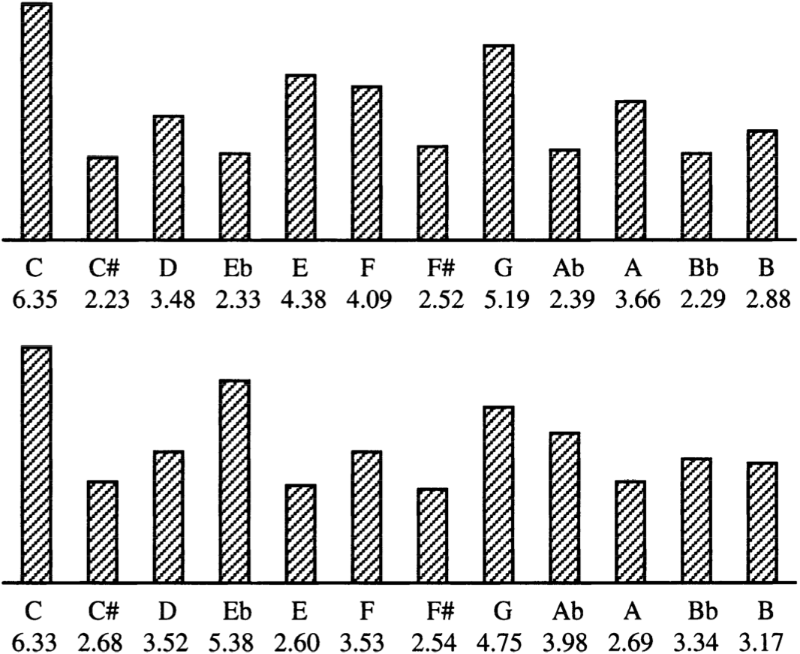

HOW TO GET THE NOTES OF A SONG:
Chroma (audioBuffer, fft, fftSize):
1. Compute the STFT of the input audio buffer
(fs = 44.1k, N = 4096, Hop = 2048 )
2. Loop: for each window:
- spectrum = fft.spectrum //obtain the magnitude spectrum
- calculateChromaVector (spectrum)
- chromaData.push (chromaVector)
3. return chromaData
CalculateChromaVector (spectrum, sampleRate):
1. binsize = sampleRate / spectrum.length // frequency resolution
2. Loop: for i from 0 to spectrum.length/2
- frequency = i * binSize
//calculation of the corresponding pitch class (C, …)
- pitchclass = (12*(log2(frequency/440))+12+9))%12
//magnitude corresponding to the frequency
- chromaVector[pitchClass] += spectrum[i]
3. return chromaVector
ExtractNotesFromChroma(chromaData):
1. forEach chromaVector in chromaData:
//index corresponding to the max value
- max_index = math.max(chromavector)
2. notes.push(noteNames [ max_index ] )
3. return notes // array containing the most relevant note for each window
ONCE WE HAVE THE NOTES, HOW CAN WE DETECT THE KEY?
DetectKey(notes):
Inspired by Krumhansl-Schmuckler key-finding algorithm, based on ‘key profiles’.
A key profile is a vector of 12 values, representing the stability of the 12 pitch classes relative to a
given key.
These key profiles were obtained from experiments by Krumhansl in which subjects were asked to rate how
well each pitch class “fit with” a prior context representing a key (usually a scale).
A high value means that the corresponding pitch class was judged to fit well with a given key.
The image shows (for the C major and minor scale) how much weight each note has for key recognition.
The algorithm works as follows:

noteNames = [ C, C#, D, D#, E, F, F#, G, G#, A, A#, B ]
1. forEach note in notes :
- index = noteNames.indexOf(note)
- noteCounts[index]++ ; //occurrences of each pitchClass
2. Loop: for p from 0 to 11 // for each pitchClass
- Shift right the major profile and minor profile by p
- Dot product(noteCounts,major profile) //similarity of two vectors
- Dot product(noteCounts, minor profile)
- If majorCorrelation > bestMajorCorrelation :
a. bestMajorCorrelation = majorCorrelation
b. bestMajorKey = noteNames [i] + ‘Major’
- If minorCorrelation > bestMinorCorrelation :
c. bestMinorCorrelation = minorCorrelation
d. bestMinorKey = noteNames [i] + ‘Minor’
3. return detectedkeys.push(bestMajorKey, bestMinorKey)